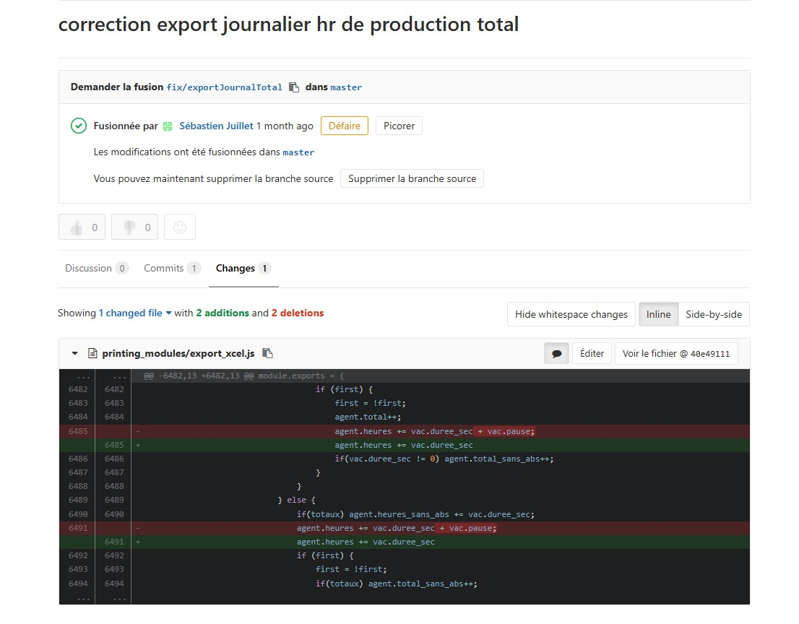
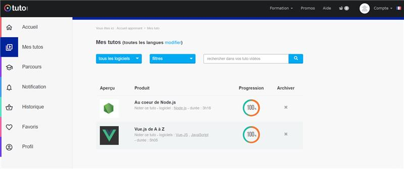
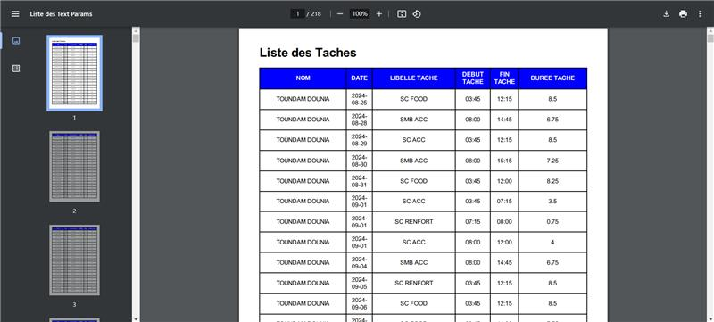

2025
Stage GTP-Conseil
Lors de ce stage, j'ai eu l'opportunité de travailler avec un développeur de l'entreprise GTP-Conseil sur la création d'impressions Excel et PDF.
J'ai commencé ce stage en consolidant mes bases en JavaScript et en découvrant Node.js à travers des formations ciblées.
Une fois ces bases acquises, j’ai réalisé mes premières impressions.
Pour cela, j’ai utilisé plusieurs bibliothèques Node.js :
- excel4node : génération de fichiers Excel
- wkhtmltopdf.js : génération de fichiers PDF
- moment.js : gestion et formatage des dates
- underscore.js : manipulation et traitement des données



